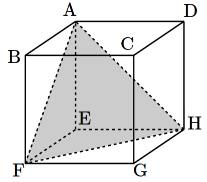
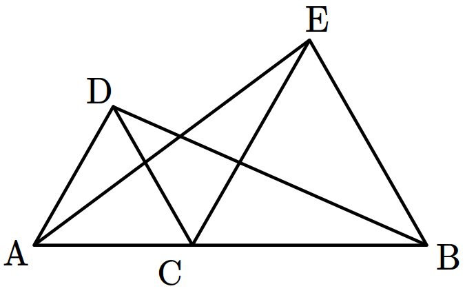

- \(8\)
- \(10\)
- \(12\)
- \(14\)
- \(16\)
Mathematics·Studies (I)
Hum. & Arts

Let us select three random vertices in the cube to the right
and form a triangle.
What is the number of ways to form a triangle
congruent to the triangle shown in the figure?
[1.5 points]
- \(4\)
- \(6\)
- \(8\)
- \(12\)
- \(24\)
(※ \(n=2^k,\: k=0,1,2,3,\cdots\))
A.
The time it takes to produce one product \(P_1\) is \(1\).
B.
After producing two products \(P_1\), one at a time,
you can attach them to produce one product \(P_2\).
C.
After producing two products \(P_n\), one at a time,
you can attach them to produce one product \(P_{2n}\).
The time it takes to attach two products \(P_n\) is \(2n\).
- \(32\)
- \(64\)
- \(80\)
- \(96\)
- \(112\)

- \(4\,:\,3\)
- \(8\,:\,5\)
- \(15\,:\,12\)
- \(16\,:\,11\)
- \(17\,:\,13\)

As the figure shows,
let \(\mathrm{C}\) be a point on the line segment \(\mathrm{AB}\),
and let us form two equilateral triangles \(\mathrm{ACD}\) and \(\mathrm{BCE}\)
above the line segment \(\mathrm{AB}\).
The following is a proof that
\(\overline{\mathrm{AE}} = \overline{\mathrm{DB}}\).
(Proof)
Since \(\angle \mathrm{ACD} = \angle \mathrm{ECB} = 60°\),
From \((1), (2)\) and \((3)\),
In the proof above, what are appropriate for \((\alpha)\) and \((\beta)\)?
[1 point]
\(\fbox{\(\;(\alpha)\;\)}\) from triangle \(\mathrm{ACD}\)
\((1)\)
\(\fbox{\(\;(\beta)\;\)}\) from triangle \(\mathrm{BCE}\)
\((2)\)
\(\angle \mathrm{ACE} = 60°+ \angle \mathrm{DCE} = \angle \mathrm{DCB}\)
\((3)\)
\(\triangle \mathrm{ACE} \equiv \triangle \mathrm{DCB}\)
since the two sides and the angle between them are equivalent.
Therefore \(\overline{\mathrm{AE}} = \overline{\mathrm{DB}}\).
| \((\alpha)\) | \((\beta)\) | |
| ① | \(\overline{\mathrm{AC}} = \overline{\mathrm{AD}}\) | \(\overline{\mathrm{CE}} = \overline{\mathrm{BE}}\) |
| ② | \(\overline{\mathrm{AC}} = \overline{\mathrm{DC}}\) | \(\overline{\mathrm{CE}} = \overline{\mathrm{BE}}\) |
| ③ | \(\overline{\mathrm{AD}} = \overline{\mathrm{CD}}\) | \(\overline{\mathrm{CB}} = \overline{\mathrm{BE}}\) |
| ④ | \(\overline{\mathrm{AC}} = \overline{\mathrm{AD}}\) | \(\overline{\mathrm{CE}} = \overline{\mathrm{CB}}\) |
| ⑤ | \(\overline{\mathrm{AC}} = \overline{\mathrm{DC}}\) | \(\overline{\mathrm{CE}} = \overline{\mathrm{CB}}\) |